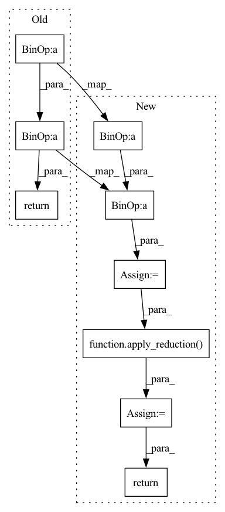

Pattern ID :15582

Before Change
super(ESRLoss, self).__init__()
def forward(self, input, target):
return torch.mean(torch.abs(target-input)**2)/torch.mean(torch.abs(target)**2)
class DCLoss(torch.nn.Module):
After Change
self.reduction = reduction
def forward(self, input, target):
losses = ((target-input).abs()**2).sum(-1)/(target.abs()**2).sum(-1)
losses = apply_reduction(losses, reduction=self.reduction)
return losses
class DCLoss(Module):
In pattern: SUPERPATTERN
Frequency: 3
Non-data size: 9
Instances
Fragment ID: 52803941
Project Name: csteinmetz1/auraloss
Commit Name: 9cacf0f11d2b6f8f1671cf14ca5fda3c1e3632aa
Time: 2020-12-10
Author: csteinmetz1@gmail.com
File Name: auraloss/time.py
M Class Name: ESRLoss
N Class Name: ESRLoss
M Method Name: forward(3)
N Method Name: forward(3)
M Parent Class: Module
N Parent Class: torch.nn.Module
M File Name: auraloss/time.py
N File Name: auraloss/time.py
M Start Line: 12
M End Line: 12
N Start Line: 24
N End Line: 26
'>
Before Change
super(DCLoss, self).__init__()
def forward(self, input, target):
return (torch.abs(torch.mean(target-input))**2)/(torch.mean(torch.abs(target)**2))
class LogCoshLoss(torch.nn.Module):
After Change
self.reduction = reduction
def forward(self, input, target):
losses = ((target-input).mean(-1)**2).abs()/(target.abs().mean(-1)**2)
losses = apply_reduction(losses, self.reduction)
return losses
class LogCoshLoss(Module):
'>
Fragment ID: 52803949
Project Name: csteinmetz1/auraloss
Commit Name: 9cacf0f11d2b6f8f1671cf14ca5fda3c1e3632aa
Time: 2020-12-10
Author: csteinmetz1@gmail.com
File Name: auraloss/time.py
M Class Name: DCLoss
N Class Name: DCLoss
M Method Name: forward(3)
N Method Name: forward(3)
M Parent Class: Module
N Parent Class: torch.nn.Module
M File Name: auraloss/time.py
N File Name: auraloss/time.py
M Start Line: 24
M End Line: 24
N Start Line: 48
N End Line: 50
'>
Before Change
Returns:
Tensor: Log cosh loss value.
return torch.mean( (1/self.a) * torch.log(torch.cosh(self.a * (input - target)) + self.eps))
class SDRLoss(torch.nn.Module):
After Change
self.reduction = reduction
def forward(self, input, target):
losses = ((1/self.a) * torch.log(torch.cosh(self.a * (input - target)) + self.eps)).mean(-1)
losses = apply_reduction(losses, self.reduction)
return losses
class SNRLoss(Module):
'>
Fragment ID: 52803947
Project Name: csteinmetz1/auraloss
Commit Name: 9cacf0f11d2b6f8f1671cf14ca5fda3c1e3632aa
Time: 2020-12-10
Author: csteinmetz1@gmail.com
File Name: auraloss/time.py
M Class Name: LogCoshLoss
N Class Name: LogCoshLoss
M Method Name: forward(3)
N Method Name: forward(3)
M Parent Class: Module
N Parent Class: torch.nn.Module
M File Name: auraloss/time.py
N File Name: auraloss/time.py
M Start Line: 50
M End Line: 50
N Start Line: 76
N End Line: 78